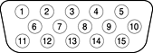

VGA Connector
The Xserve computer comes with a video graphics card installed.
The card has a VGA connector for the video monitor.
The VGA connector is a three-row DB-15 (also called mini sub
D15) connector for use with a VGA, SVGA, or XGA monitor. Figure 3-4 shows
the pin configuration and Table 3-6 lists the signals and pin assignments.
Figure
3-4 VGA connector

Table
3-6 Signals on the VGA connector
| Pin |
Signal name |
Description |
| 1 |
RED |
Red video signal |
| 2 |
GREEN |
Green video signal |
| 3 |
BLUE |
Blue video signal |
| 4 |
n.c. |
No connect |
| 5 |
GND |
Ground |
| 6 |
RED_RTN |
Red video signal return |
| 7 |
GREEN_RTN |
Green video signal return |
| 8 |
BLUE_RTN |
Blue video signal return |
| 9 |
n.c. |
No connect |
| 10 |
GND |
Ground |
| 11 |
n.c. |
No connect |
| 12 |
SDA |
I2C data |
| 13 |
HSYNC |
Horizontal synchronization signal |
| 14 |
VSYNC |
Vertical synchronization signal |
| 15 |
SCL |
I2C clock |
© 2002 Apple Computer, Inc. (Last Updated August 6, 2002)